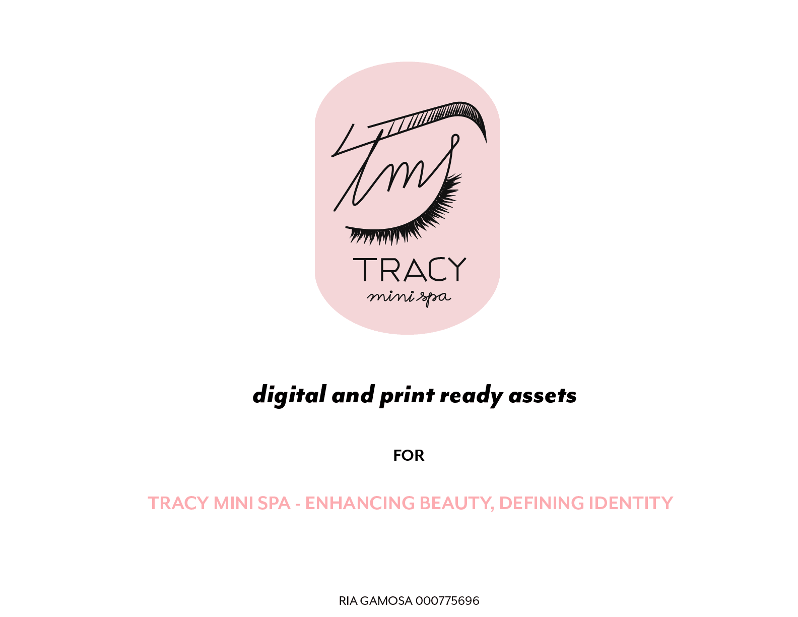
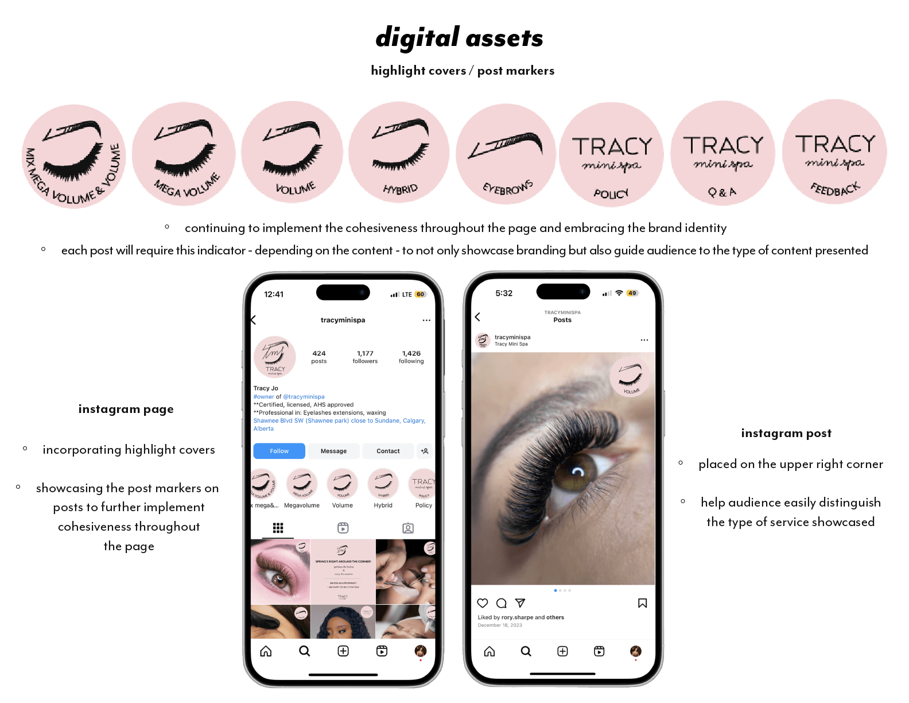
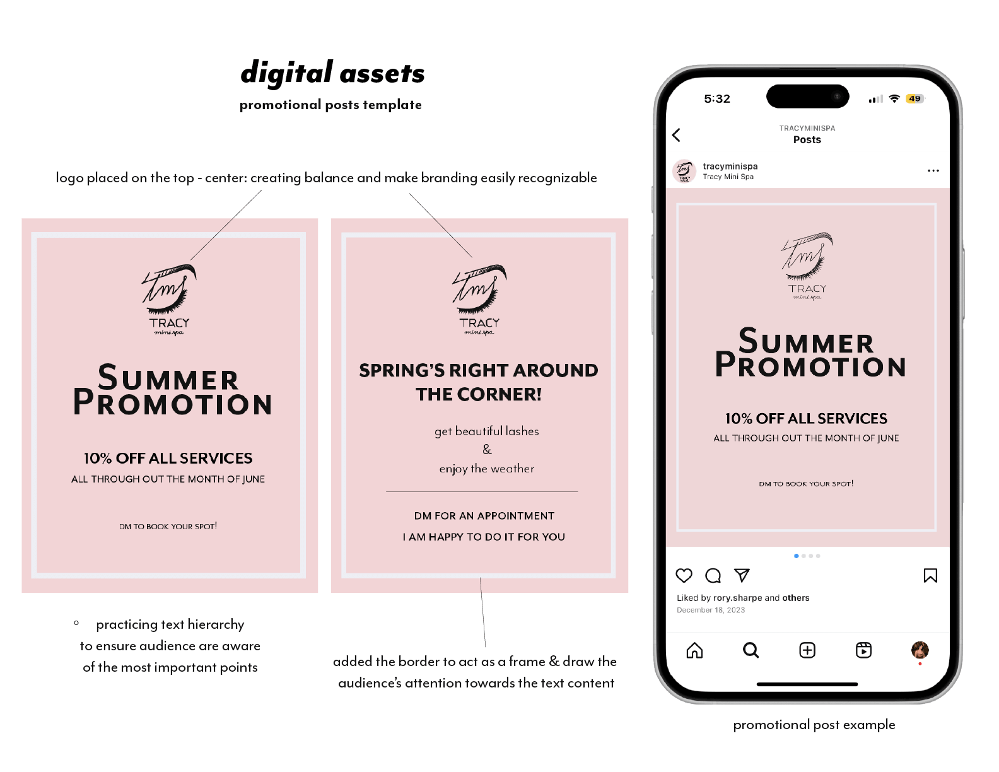
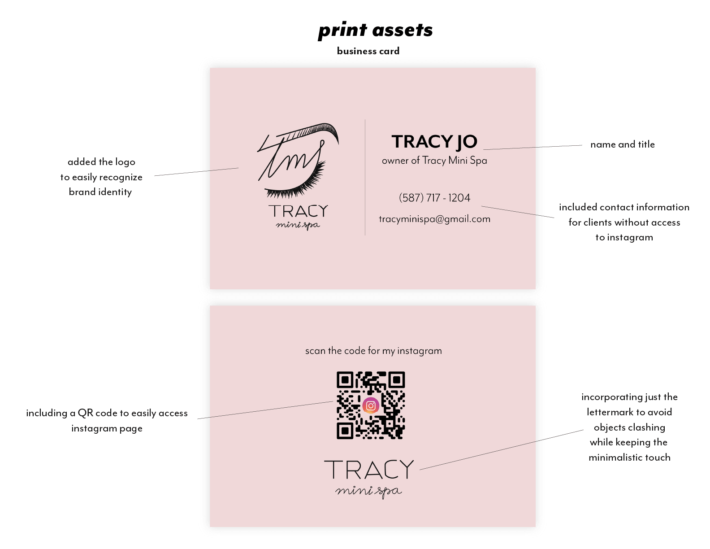
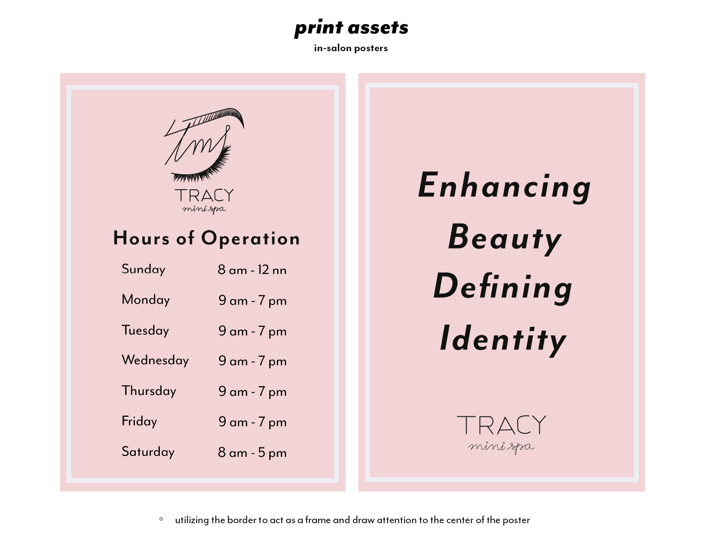
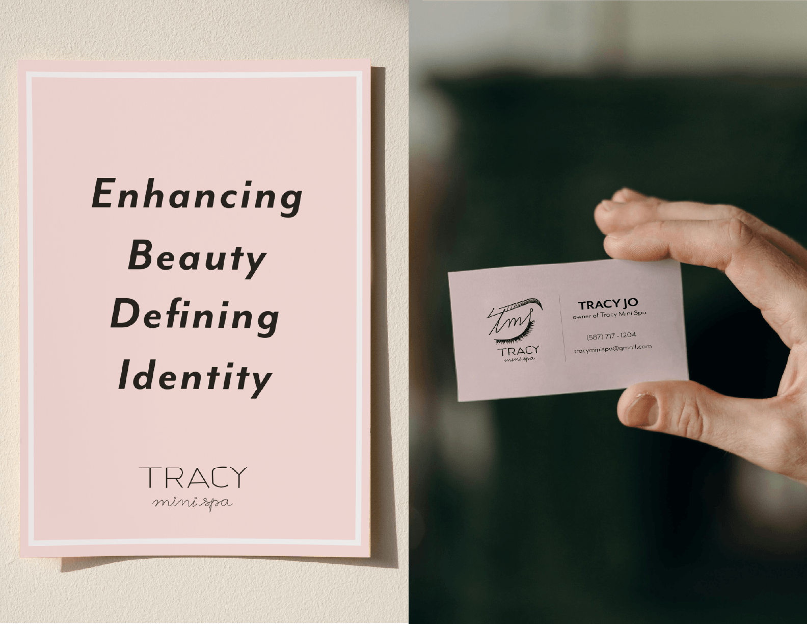

Goal: Create a digital and print ready assets.
Role: Graphic Designer
Technologies: Adobe Illustrator, Adobe Photoshop
Project Type: Academic Project
Completed: April 2025
Notes: Tracy Mini Spa has a loyal customer base but lacks a unified brand identity. Without a strong visual presence, it is difficult to stand out, attract new clients, and build brand recognition - both online and in-person.
The creative direction embraces a “soft and dainty” aesthetic, using a palette of light blush tones to convey femininity, warmth, and approachability. A minimal design approach was intentionally chosen to reflect the brand’s delicate and refined nature, allowing the visuals to feel clean, calming, and consistent. The final deliverables include a cohesive set of branded assets such as Instagram highlight covers and post markers, promotional post templates, business cards, and in-salon posters—ensuring a unified and recognizable presence across all medias.





